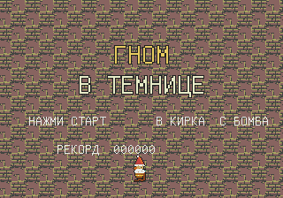
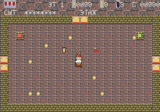
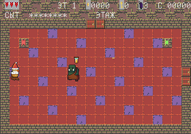

Гном в темнице
Роглайк для Sega Mega Drive / Genesis
Гном попал в темницу гоблинов. Собирайте золото, зачищайте комнаты и сразитесь с королём гоблинов.
Скачать v1.1.0 ROM .bin Исходники



Крест — ходьба, A/B — кирка, C — бомба, Start — пауза.